Самые популярные Японские автомобили:
Toyota
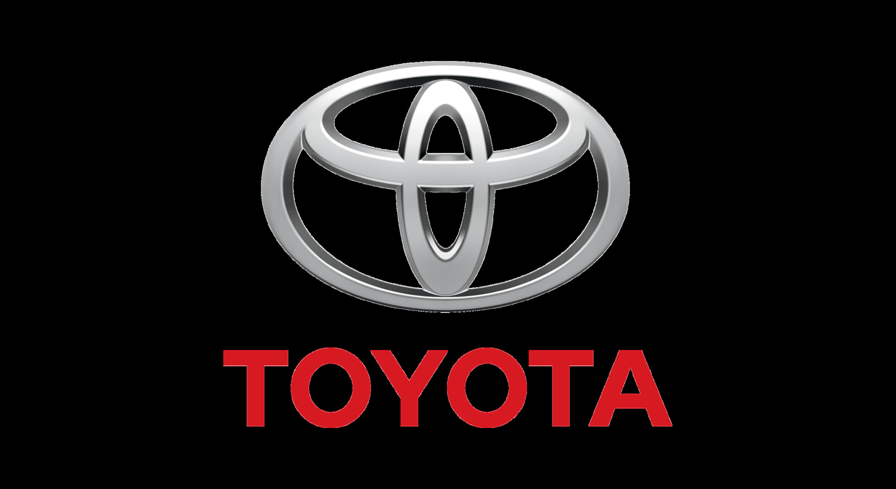
Сегодня это крупнейший концерн по производству авто в Японии. Помимо автомобилестроения, компания также занимается оказанием финансовых услуг.
| Год основания |
924 – год основания компании, 1937 год – основание Toyota Motor. |
| Основатель |
Сакити Тоёда и его сын Киитиро Тоёда |
| Штаб-квартира, офисы |
город Тоёта, префектура Айти в Японии |
| Продукция |
Автомобили различных классов (легковые и грузовые), автобусы, военный автотранспорт, в 2019 году был представлен проект планетохода (космические технологии). |
| Официальный сайт |
http://www.toyota-global.com |
Автомобили Тойота являются самими продаваемыми в мире, с объемами продаж этой марки может посоперничать разве что немецкий Volkswagen. Причины такой популярности очевидны:
Toyota Avensis
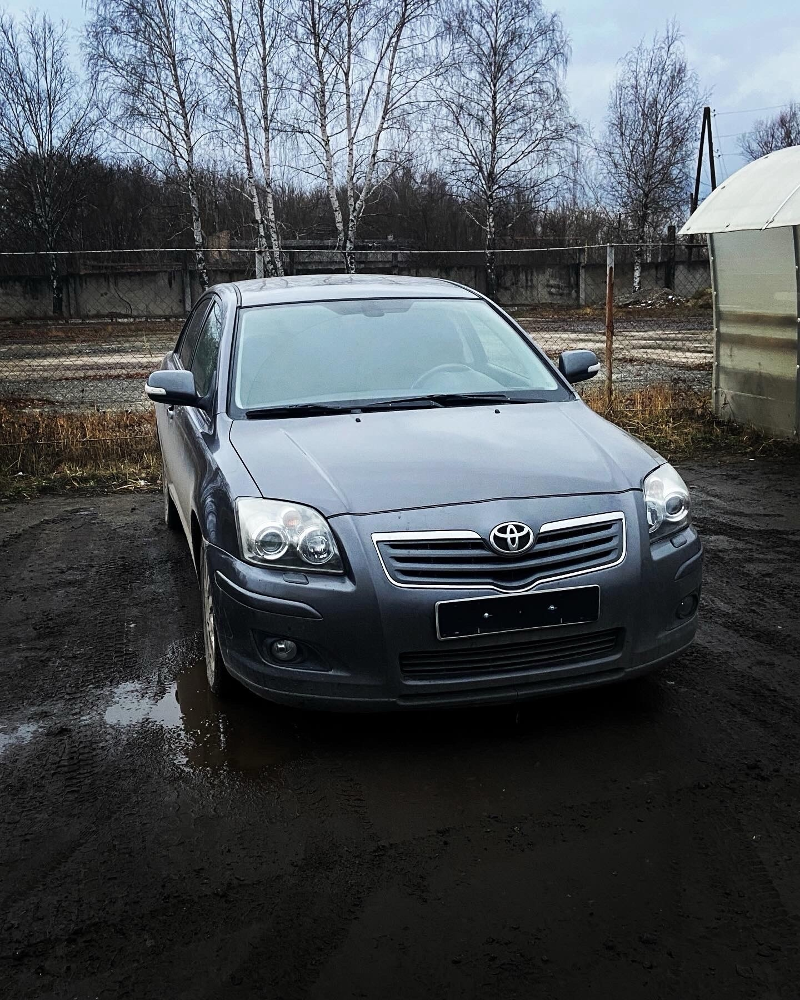
Toyota Avensis (Тойота Авенсис) – четырехдверный, с передним, поперечным размещением мотора, передним приводом пятиместный седан среднеразмерного D класса, выпускался японским автомобилестроительным концерном Toyota Motor Corporation (структурное подразделение японской корпорации Toyota Group). Модель собиралась в Соединенном Королевстве, городке Бернастон графства Дербишир структурным подразделением Toyota Motor Manufacturing (UK) Ltd. Родственные в технической части модели Toyota Premio, Toyota Allion, Scion tC. Toyota Avensis разработана специально для продажи на европейских рынках.
Lexus
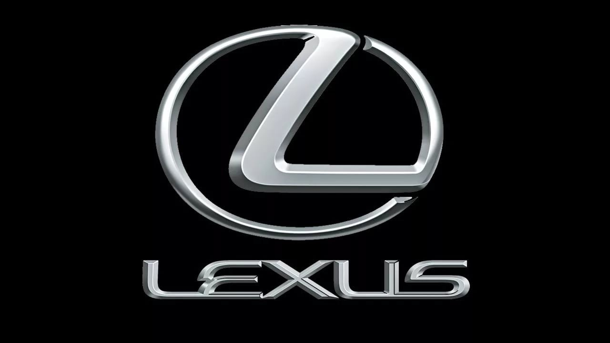
Это отдельная торговая марка компании Тойота, занимающаяся производством автомобилей премиум-класса. Автомобили Лексус значительно отличаются от Тойоты – они имеют более презентабельный, роскошный дизайн, полную комплектацию, комфортный интерьер и соответствуют высокому классу безопасности. Автомобили Lexus успешно конкурируют на рынке с марками Infiniti (от Nissan) и Acura (от Honda).
| Год основания |
1983 год |
| Основатель |
Эйдзи Тойода |
| Штаб-квартира, офисы |
Город Нагоя в Японии |
| Продукция |
Престижные автомобили люкс-класса. |
| Официальный сайт |
https://www.lexus-int.com |
Lexus RX
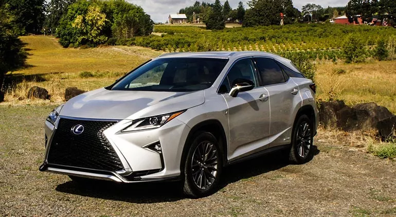
Самый продаваемый автомобиль бренда – Lexus RX. На рынке представлены 5-дверные модели с объемом двигателя от 2,0 до 3,5 литра. Мощные, быстрые, экономичные и комфортабельные, они идеально подходят для целеустремленных и активных покупателей, знающих себе цену. Цены на авто в России – от 55000$. Lexus RX четвертого поколения, выпускающийся с 2015 года, был признан самым надежным авто десятилетия в 2023 году. Модель оснащается мощным двигателем, требовательным к качеству топлива. При грамотной эксплуатации силовой агрегат способен служить без ремонта 200-300 тысяч километров пробега. Пневмоподвеска, которая устанавливается в этой машине, повышает ходовые характеристики. Каркас кузова выполнен из стали, крылья – из алюминия. По данным уровень безопасности оценивается в 5 баллов: 90% - защита взрослых, 87% - детей.
Honda
На первых этапах своего существования компания занималась выпуском комплектующих для моторов, после чего перешла на сборку мотоциклов. Первый автомобиль сошел с конвейера компании только в 1963 году.
| Год основания |
1938 год – компания по производству поршневых колец: 1946 год – Honda Technical Research Institute (Технический исследовательский институт Хонды) |
| Основатель |
Соитиро Хонда |
| Штаб-квартира, офисы |
Япония, Минато, Токио |
| Продукция |
Автомобили, мотоциклы, самолеты, садовая техника, снегоходы. Также компания оказывает финансовые услуги. |
| Официальный сайт |
http://world.honda.com |
Сегодня Хонда заслуженно считается одним из самых востребованных автомобилей на мировом рынке.
Honda Civic
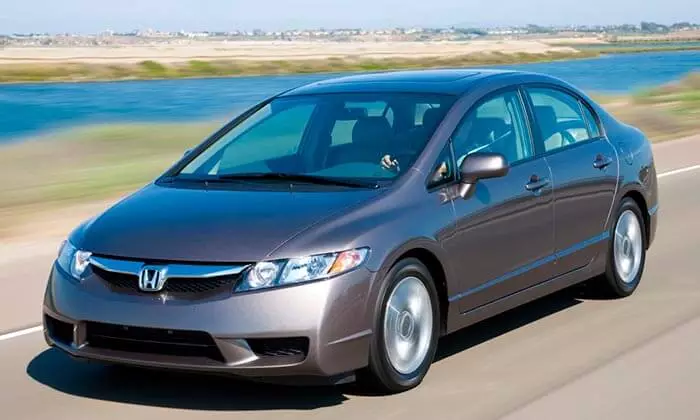
Модель Хонды, которая позволила компании сорвать «джек-пот» – до нее авто компании е пользовались особым спросом. Хонда Цивик стала одним из самых продаваемых авто во всем мире. Сегодня модель производится в нескольких вариантах комплектации и спрос на нее также велик, как и несколько десятилетий назад. Цена – от 18000$.
Стили японского тюнинга
В Японии очень любят и почитают автомобили, также очень любят выделить свой автомобиль в потоке. Поэтому каждый японец, который увлекается тюнингом, всегда готов хорошенько затюнить свой автомобиль. Иногда делается это в извращенной форме, а потом дается этому произведению какое-нибудь емкое название.
Vip/Bippu
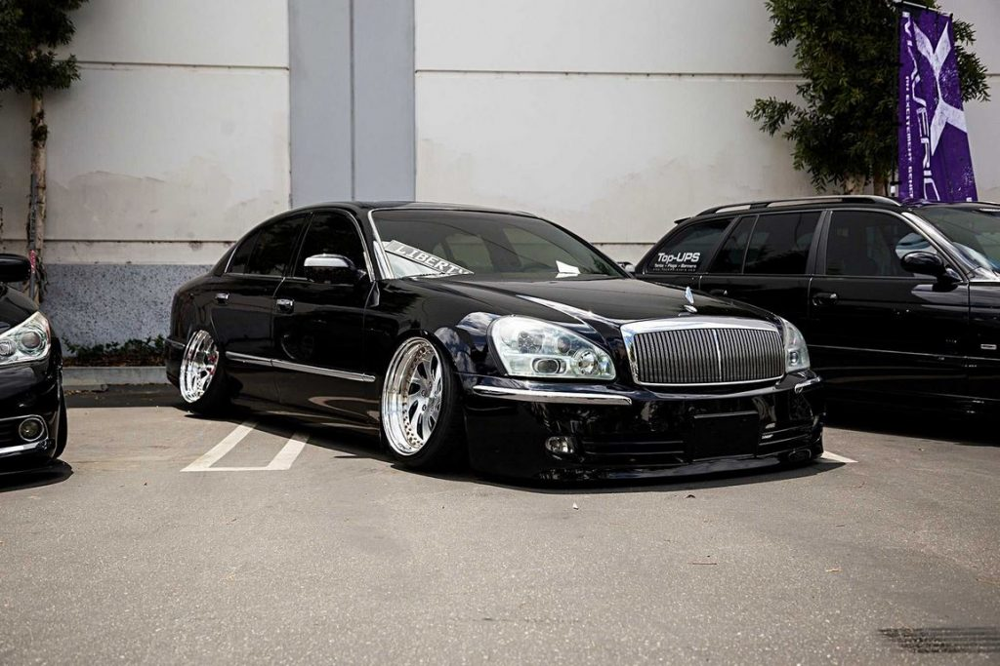
Легенда гласит, что стиль Vip, также известный как Bippu, появился в лихих 90-х благодаря японской мафии из клана Якудза
Oni-kyan
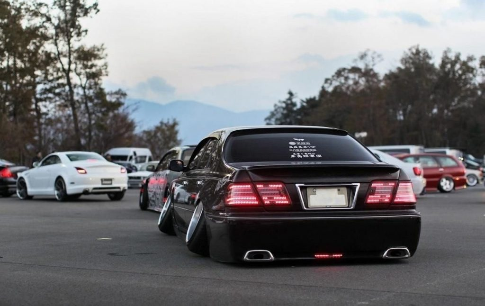
Если на роскошных седанах Bippu отрицательный развал колес имеет место быть в силу производственной необходимости, поскольку колеса на них такие огромные, что просто не помещаются в колесные арки, то авто в стиле Oni-kyan это апофеоз отрицательного развала.
Bosozoku
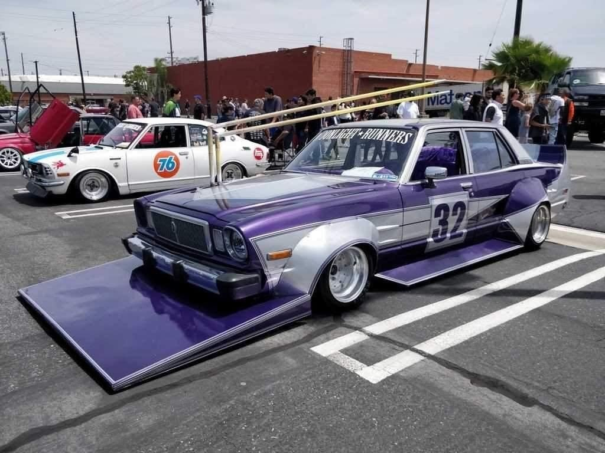
Bosozoku это не только и не столько стиль тюнинга, это целая субкультура. Изначально она была связана с криминалом, но постепенно превратилась в особый стиль жизни. Одним из основных признаков которого являются мотоциклы и автомобили, прокачанные самым экстремальным образом.
Takeyari
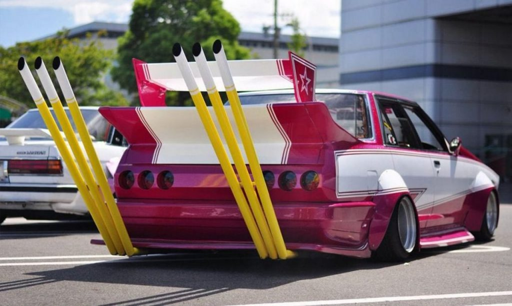
Takeyari переводится как бамбуковое копьё. Если взглянуть на острые срезы труб, то становится понятно, почему было выбрано такое название. Традиционно Takeyari должны располагаться в задней части автомобиля, но на сегодняшний день, длинные выхлопные трубы могут торчать из машины откуда угодно.
Itasha

Говоря о наиболее экстремальных проявлений JDM тюнинга, нельзя обойти стороной и такое его проявление, как Itasha. Этим словом обозначаются автомобили, чей кузов разрисован в стиле аниме и манги. Также подобное украшение можно обнаружить на мотоциклах и велосипедах. В этом случае используются термины Itansha или Itachari. В Itasha можно превратить любую машину.
Dorisha
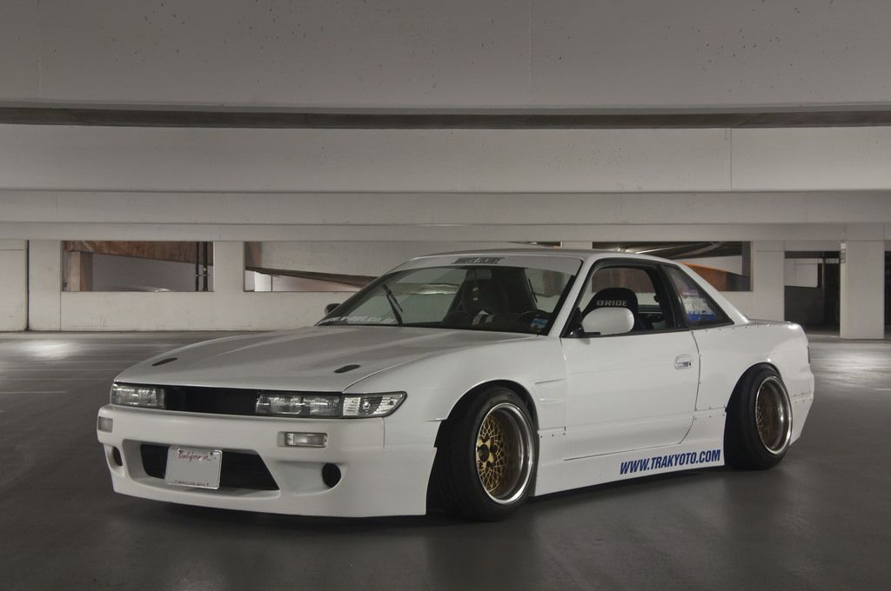
Dorisha – это одно из не многих направлений экстремального JDM тюнинга, который призван не шокировать окружающих, а наделить автомобиль вполне конкретными свойствами, то есть превратить обычную спортивную машину, а иногда и не совсем спортивную, в дрифт кар, каждый элемент которого служит конкретной и практической цели.
Kyusha
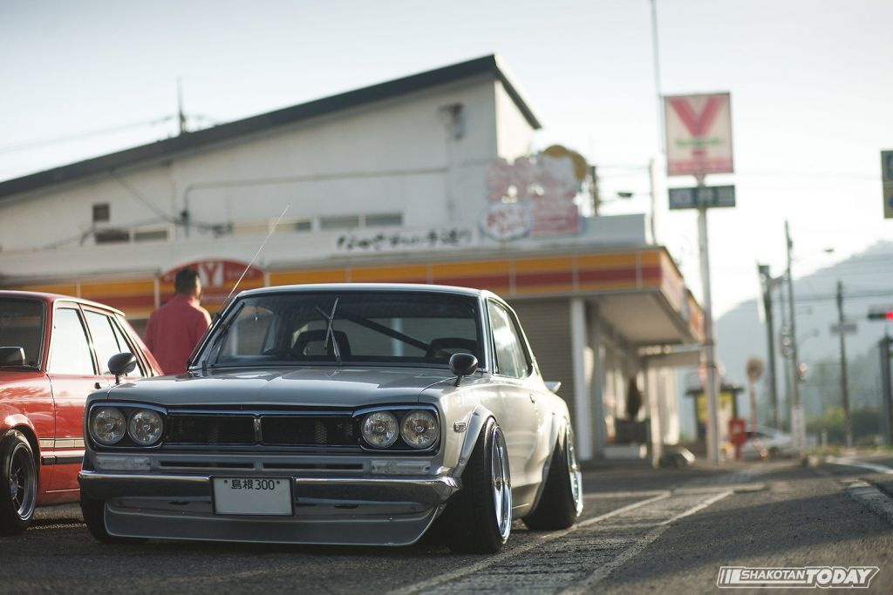
Kyusha – это одна из разновидностей стиля Bosozoku. Наиболее умеренное и в какой-то мере наиболее элегантная его разновидность. Kyusha может быть только японский и обязательно винтажный автомобиль.
Grachan
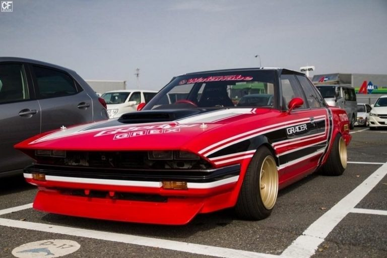
Grachan – стиль японского тюнинга, внешне подражающий туринговым гоночным машинам, участвовавших в Grand Championship, японской гоночной серии 70-80-х годов
Yankee style
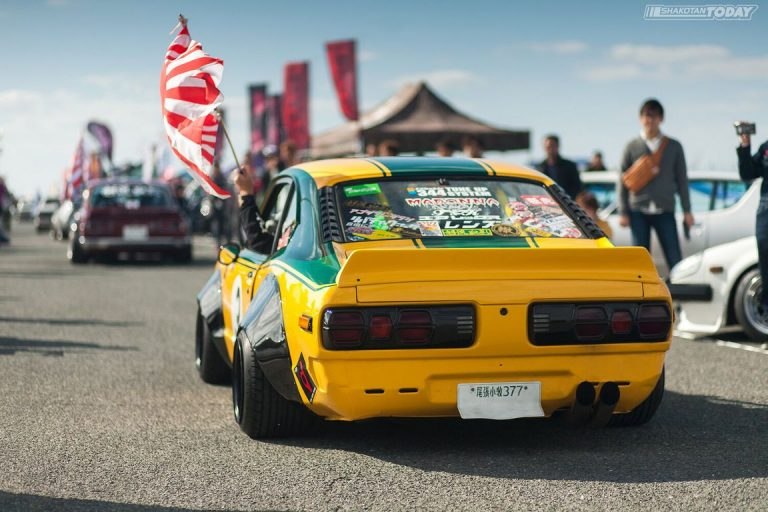
Yankee style – машины выкрашены в американские цвета, под которыми по большей части понимается яркая раскраска в стиле гавайских рубашек. Чаще всего используются оттенки белого, оранжевого и желтого цветов. Также Yankee style предполагает заниженную подвеску автомобиля.
Dekotora
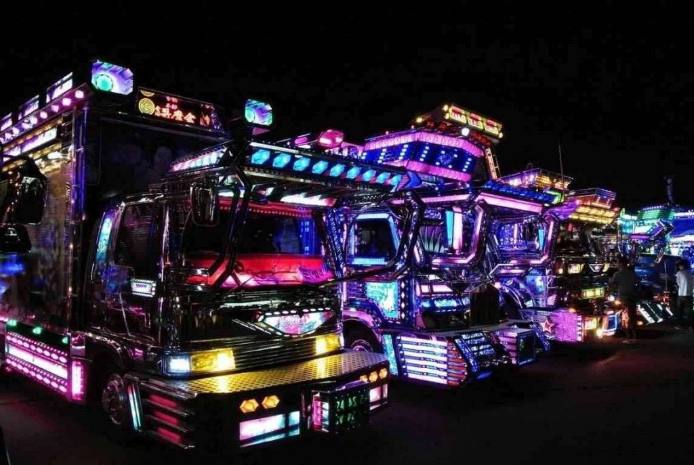
Грузовики в стиле Dekotora родом из двадцатого века это лишь детский лепет по сравнению с тем, как эти монстры выглядят сегодня. Больше хрома, много ярких огней и дизайн в виде мультяшных боевых роботов. Кажется, что у людей создававших такой образ, воображение отсутствует напрочь.